Home / MLF / Week 10 / Real questions
MLF week 10 - real exam questions
45 questions pulled from past papers whose wording matches this week's topics, newest first, duplicates removed. Pick your answers, then press Check answers. Figures and answer keys are the originals.
 be a discrete random variable such that
be a discrete random variable such that 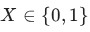
with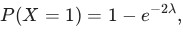
where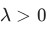
is an unknown parameter. Consider the random sample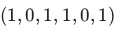
from . The maximum likelihood estimate of 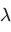
is: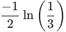
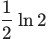
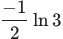
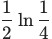
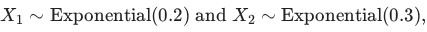
where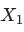
and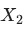
are independent. Define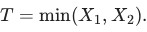
Which of the following is the value of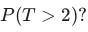
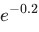
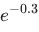
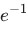
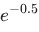
satisfies 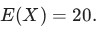
Using Markov's inequality, find the smallest value of such that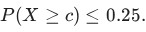
Enter your answer as an integer. be a real symmetric matrix. Consider the following statements. (1) is orthogonally diagonalizable. (2) is not diagonalizable. (3) All the eigenvalues of are real. (4) The eigenvalues of may be imaginary. (5) Eigenvectors corresponding to distinct eigenvalues of are linearly independent. (6) Eigenvectors corresponding to distinct eigenvalues of are linearly dependent. Which of the above statements are true?
be a real symmetric matrix. Consider the following statements. (1) is orthogonally diagonalizable. (2) is not diagonalizable. (3) All the eigenvalues of are real. (4) The eigenvalues of may be imaginary. (5) Eigenvectors corresponding to distinct eigenvalues of are linearly independent. (6) Eigenvectors corresponding to distinct eigenvalues of are linearly dependent. Which of the above statements are true?- (1), (3), (5)
- (2), (4), (6)
- (2), (3), (5)
- (1), (4), (6)
 is a square matrix of order
is a square matrix of order  with the eigenvalue
with the eigenvalue  repeated twice. Which of the following is/are true?
repeated twice. Which of the following is/are true?- is invertible.
- Each of the entries on the main diagonal of is equal to .
- has two linearly independent eigenvectors.
 is not invertible, where
is not invertible, where  is the identity matrix.
is the identity matrix.
is a 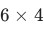
matrix with rank 4. Which of the following is/are true?- Columns of are linearly independent.
- Null space of contains only the zero vector.
- Row space of is
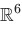
. - Left null space of has dimension 2.
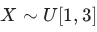
. That is, is distributed uniformly over
is distributed uniformly over 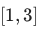
. Define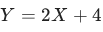
. Which of the following is true regarding the random variable ?
?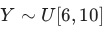
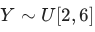
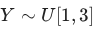
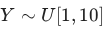
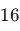
. Using Markov's inequality, find the tightest upper bound to the probability that the next week's sales is at least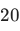
. Enter your answer correct to one decimal place. Note that an upper bound of is valid but not tight. be an exponentially distributed random variable with mean
is valid but not tight. be an exponentially distributed random variable with mean 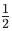
. Find the value of for which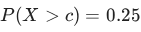
. Enter your answer correct to two decimal places. and is given by:
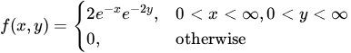
Compute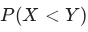
. Enter your answer correct to two decimal places.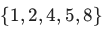
is sampled from a distribution whose PDF is given below with parameter :
:
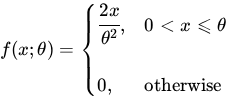
Assume that each point in the dataset is sampled independently from this distribution. Find the maximum likelihood estimate for . Your answer should be an integer. (in hours) taken to complete a technical interview round follows the probability density function:
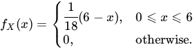
Find the expected time taken to complete an interview. Your answer should be an integer. be the time (in minutes) a data scientist takes to preprocess a dataset before training a model. Suppose the expected preprocessing time is 40 minutes.Using Markov’s inequality, find an upper bound on the probability that the preprocessing time is at least 1.25 times its expected value.


 . Based on the above data, answer the given subquestions.
. Based on the above data, answer the given subquestions. minutes given that it has already taken more than
minutes given that it has already taken more than  minutes
minutes 
 and be two random variables having joint density function:
and be two random variables having joint density function:
 Find the value of
Find the value of  . Enter the answer correct to three decimal places. be a discrete random variable such that
. Enter the answer correct to three decimal places. be a discrete random variable such that  and
and  where is an unknown constant. Consider a random sample
where is an unknown constant. Consider a random sample  . Find the maximum likelihood estimate of for the given sample. Enter the answer correct to one decimal place.
. Find the maximum likelihood estimate of for the given sample. Enter the answer correct to one decimal place.
 Run PCA on this dataset. Based on the above data, answer the given subquestions.
Run PCA on this dataset. Based on the above data, answer the given subquestions.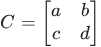
is the covariance matrix of the dataset, find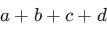
. Enter the nearest integer as your answer. Run PCA on this dataset. Based on the above data, answer the given subquestions. be the unit-norm eigenvector corresponding to the smallest eigenvalue of the covariance matrix. Find the variance of the dataset along the direction . Enter the nearest integer as your answer.
be the unit-norm eigenvector corresponding to the smallest eigenvalue of the covariance matrix. Find the variance of the dataset along the direction . Enter the nearest integer as your answer.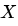
be a continuous random variable with the probability density function: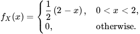
What is the value of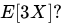
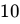
and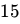
minutes
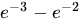
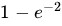
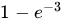
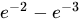
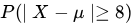
, where represents the mean of the random variable . Enter your answer correct to two decimal places. ,
,  and
and  , each having three points as shown below. The figure is drawn to scale. PCA is run on both these datasets separately.
, each having three points as shown below. The figure is drawn to scale. PCA is run on both these datasets separately.

 and
and  are the covariance matrices of the two datasets respectively. If
are the covariance matrices of the two datasets respectively. If  is the eigenvector corresponding to the largest eigenvalue of and
is the eigenvector corresponding to the largest eigenvalue of and  is the eigenvector corresponding to the smallest eigenvalue of , find the absolute value of
is the eigenvector corresponding to the smallest eigenvalue of , find the absolute value of  . Both eigenvectors have unit norm. Your answer should be an integer.
. Both eigenvectors have unit norm. Your answer should be an integer.


- PCA projects the original data onto a lower-dimensional subspace thatcaptures the maximum variance.
- The eigenvectors of the covariance matrix correspond to the directions ofmaximum variance.
- The principal components form a basis that is not necessarily orthogonal.
- The principal components obtained through PCA are always uncorrelated.
- The principal components of a matrix are given by the eigenvectors of itscovariance matrix.
- The principal components of a matrix are given by the singular values of itscovariance matrix.
- PCA finds the principal components by maximizing the variance along eachcomponent.
- The principal components form a basis that is not necessarily orthogonal.


- PCA will transform the original data set onto a lower dimension subspace suchthat the variance of the project is maximized.
- PCA calculates the mean of each data set to determine its significance.
- PCA can be used to reduce the dimensionality of the dataset.
- PCA will transform the original data set onto a lower dimension subspace suchthat the reconstruction error is maximized.
- To find the directions that capture the maximum variance in the data.
- To find directions that capture the minimum variance in the data.
- To increase the dimensionality of the data.
- To reduce the number of data points.


- PCA is a supervised learning algorithm.
- Principal components are the eigenvectors of the sample covariance matrix.
- Principal components are eigenvectors of the centered data matrix.
- If p1 and p2 are the principal component vectors, then p1 is orthogonal to p2.
- In classification, the output variable is continuous and real-valued, while inregression, it is categorical.
- Regression models are used for predicting probabilities, whereas classificationmodels focus on predicting absolute values.
- Classification models aim to find decision boundaries to separate data intoclasses, while regression models seek to predict a numeric value.
- In regression, the commonly used loss function is mean squared error, whilein classification, 0 -1 loss is typically employed.
- The first principal component represents the direction along which thevariance of the dataset is maximized.
- The first principal component represents the direction along which thevariance of the dataset is minimized.
- The first principal component is the eigenvector corresponding to the smallesteigenvalue of the covariance matrix.
- The first principal component is the eigenvector corresponding to the largesteigenvalue of the covariance matrix.
- A, B and C are independent.
- A, B and C are dependent.
- A, B and C are pairwise independent.
- P(A) = P(B) = P(C) = 1/2
- All principal components are orthogonal to each other.
- The number of principal components for n-dimensional data are atmost n−1.
- The first principal component accounts for most of the possible variability ofthe original data i.e, maximum possible variance.
- The first principal component is the eigenvector of the covariance matrixcorresponding to the maximum eigenvalue.